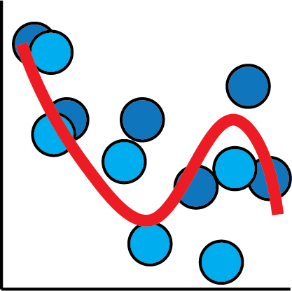
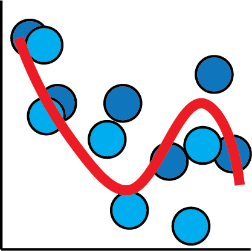

Fret Not, It's Curve Fitting All The Way Down!

"epiphanies in Bayes-land"
Eric J. Ma, Digility 2018
Follow Along!
ericmjl.github.io/ curve-fitting-talk

About Myself

|

|

|
|
Investigator, Scientific Data Analysis |
ScD, Biological Engineering, 2017 |
Bayesian Stats, ML, Network Science |
Goals
- Demystify deep learning and its relationship to statistical modelling, using lots of pictures and minimal equations.
- Show how Bayesian methods can help you design more reasonably.
- Introduce probabilistic programming as a tool that can be in your toolkit.

Estimation


import numpy as np
import pymc3 as pm
data = np.random.normal(loc=6, sd=2, size=1000)
with pm.Model() as model:
# Priors
sd = pm.Exponential('sd', lam=5)
mu = pm.Normal('mu', mu=0, sd=100)
# Likelihood for data
like = pm.Normal('like', mu=mu, sd=sd, observed=data)
Linear Regression


import pymc3 as pm
import numpy as np
x = np.random.normal(loc=0, sd=10, size=1000)
m = 10; c = 6;
y = m * x + c + np.random.normal(0, 0.2)
with pm.Model() as model:
# Priors
m = pm.Normal('m', loc=0, sd=100)
c = pm.Normal('c', loc=0, sd=100)
sd = pm.Exponential('sd', lam=5)
# Link function
mu = m * x + c
# Likelihood for data
like = pm.Normal('like', mu=mu, sd=sd, observed=y)
Logistic regression


import pymc3 as pm
import numpy as np
with pm.Model() as model:
# Priors
beta = pm.Normal('beta', mu=0, sd=100)
# Link function
p = 1 / (1 + np.exp(-beta * x))
# Likelihood for data
like = pm.Bernoulli('like', p=p, observed=data)
Parametric Curves


import pymc3 as pm
import numpy as np
import theano.tensor as tt
with pm.Model() as model:
# Priors
A = pm.HalfNormal('A', sd=100)
b = pm.Normal('b', mu=0, sd=100)
C = pm.HalfNormal('C', sd=100)
sd = pm.Exponential('sd', lam=5)
# Link function
mu = A * tt.exp(-b * x) + C
# Likelihood for data
like = pm.Normal('like', mu=mu, sd=sd, observed=data)
Neural Networks
 



def nn(x):
w1 = pm.Normal('w1', mu=0, sd=1, shape=(x.shape[1], x.shape[1]))
b1 = pm.Normal('b1', mu=0, sd=1, shape=(x.shape[1]))
a1 = tt.tanh(tt.dot(x, w1) + b1)
w2 = pm.Normal('w2', mu=0, sd=1, shape=(x.shape[1], 1))
b2 = pm.Normal('b2', mu=0, sd=1, shape=(1,))
a2 = tt.tanh(tt.dot(a1, w2) + b2)
return a2
with pm.Model() as model:
mu = nn(x)
sd = pm.Exponential('sd', lam=5)
like = pm.Normal('like', mu=mu, sd=sd, observed=data)
Deep neural networks are nothing more than matrix transformations on input data.
They are nothing more than fancy curve fitters!
For more illustrations and details, check out another talk I did at PyData NYC 2017!
How can Bayesian methods can help you design more reasonably?
By "reasonably", we mean "in a way that doesn't violate common statistical sense".
How do we quantify ice hockey goaltender performance?

| ID | Goals Against | Goals Saved | Save Percentage |
|---|---|---|---|
| Jake Allen | 1614 | 1462 | 0.906 |
| Dylan Ferguson | 2 | 1 | 0.500 |
| Scott Foster | 7 | 7 | 1.000 |
Who is the better goalie?
Simplest Model
Let's assume that each player is independent of each other.
We are interested in
p, the goalie's probability of saving a goal.

Each player is estimated independently.
binomial distribution models number of successes out of a number of trials.
beta distribution tells us how uncertain we are about a probability parameter.
with pm.Model() as nopool:
n_players = len(df)
p = pm.Beta('p', alpha=1, beta=1, shape=(n_players,))
like = pm.Binomial('likelihood',
n=df['SA'],
p=p,
observed=df['SV'])
Is Dylan Ferguson really that bad?
Let's try again
This time, we should try a model that encodes a more reasonable intuition.

Players follow a population distribution.
beta distribution: α is "number of successes", while β is "number of failures.
hyperpriors: φ is a "population" success probability, while κ models total number of data points.
with pm.Model() as pool:
n_players = len(df)
phi = pm.Uniform('phi', lower=0.0, upper=1.0)
kappa_log = pm.Exponential('kappa_log', lam=1.5)
kappa = pm.Deterministic('kappa', tt.exp(kappa_log))
p = pm.Beta('p', alpha=phi*kappa,
beta=(1.0-phi)*kappa,
shape=(n_players,))
like = pm.Binomial('likelihood',
n=df['SA'],
p=p,
observed=df['SV'])
We believe that players without much data should be considered average, but with high uncertainty.
Some Pointers
With Bayesian partial pooling, we can impose reasonable prior knowledge about players on the modelling procedure.
- Average user needs visuals and experiences, not tables.
- Check models against reasonable prior information.
- Probability distributions express credibility assignments.
Epiphanies in Bayes-land
Deep neural networks are merely another example of a link function between your data and your output probability distribution parameters.
Bayesian methods can help us design more reasonably.
Fret not, it's curve fitting...
...all the way down! 😄